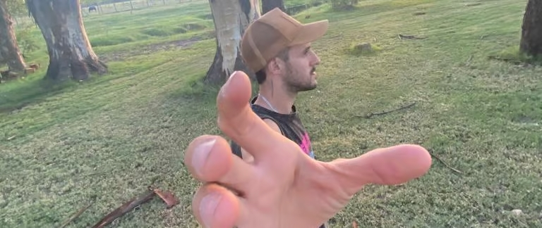

Deja de buscar Tu Proposito
Muchos nos desesperamos buscando cual es nuestro propósito de vida, que nos ayude a levantarnos por la mañana y nos dé energía para accionar. Queremos iluminarnos haciéndonos preguntas y ejercicios para descubrirlo, pero hay que accionar para encontrar el propósito
03/jun/2023 . 7 min
TU PROPOSITO
El propósito de vida, algo que en muchas ocasiones me ha hecho perder la cabeza, pensando y pensando, castigándome por no saber cuál es mi propósito, para qué estoy en esta tierra.
No creo que a todos les pase, pero si a una gran parte de la población. El hecho de no tener un propósito claro, un camino marcado, o algo que nos haga sentir que es por ahí donde tenemos que ir, puede desanimarnos mucho. En cierto grado puede deprimirnos una temporada. Hablo desde la experiencia, porque he estado ahí, y varias personas de mi circulo intimo son testigos. Esta situación me ha hecho sentirme inferior varias veces, y me costó bastante salir. Uno se siente desvalorizado, porque no sabe que aporta a la sociedad, o parece como si estuviese perdido. Como lo he vivido en carne propia, y he podido salir de ese círculo vicioso donde uno se siente menos y por ello tampoco logra hacer nada que lo saque de ahí, me gustaría poder contar mi experiencia, para que, si estas en ese momento, poder darte aliento, a que puedas salir de ese poso.
EL CIRCULO VICIOSO
Lo que nos suele pasar a los seres humanos cuando nos topamos con un problema existencial, es que empezamos a enfocarnos tanto en ello que perdemos el foco y le terminamos dando nuestra a tención a las cosas equivocadas. Por ejemplo: empezamos a sentirnos frustrados por algo, y esto comienza a dar vueltas en nuestra cabeza, y nos hace sentir de una determinada forma, entonces le damos mucha importancia a como nos sentimos, empezamos a buscar qué es lo que nos hace sentir así y ahí empezamos a crear excusas, porque no nos hacemos responsables de la situación y, obviamente, no sabemos cómo salir de ese lugar porque la importancia que le damos a como nos sentimos y a las excusas, no nos deja ver la solución. La cual no es nada más y nada menos que poner la atención en lo que verdaderamente importa. Y aquí una de las herramientas que más me ha ayudado a solucionar cuestiones personales de mi vida: observarme en tercera persona.
Se que es difícil, en esos momentos salirnos por un rato de nuestro cuerpo, y analizar la situación. ¿No te ha pasado que cuando un amigo te cuenta algo que le pasa en la vida, le encontrás la solución enseguida? o ¿Qué es más fácil solucionar los problemas de los demás que los tuyos? Eso es porque esos problemas los ves desde afuera, con otra perspectiva, y eso es lo que debemos aprender a hacer con nosotros mismos.
PRIMERO LO PRIMERO
Lo que tenemos que entender antes de poder seguir con la búsqueda del propósito, es que, en la vida, todo tiene su proceso. No podemos esperar que, siguiendo determinados pasos, las cosas cambiarán en cuestión de segundos. Y, sobre todo, entender que encontrar el propósito es parte del proceso de vivir, donde tendremos que experimentar cosas nuevas y hacernos consientes de otras.
Cuando nos miramos en tercera persona, y podemos estudiar cuales son las cosas que nos gustan, lo que nos hace feliz, qué podríamos hacer por horas sin cansarnos, o que cuando estamos haciéndolas, las horas pasan volando. Podemos acercarnos a la respuesta, muchas páginas, libros y videos nos indican que haciéndonos esas preguntas podemos descubrir nuestro propósito, y la verdad que no están herrados. Pero creo que faltaría algunas herramientas más. Porque, uno puede tener idea de las cosas que le gustan, pero lo que suele pasar, es que no sabe cual de todas ellas es el propósito, o cómo combinarlas para encontrar ese propósito. Y déjame decirte, que a partir de aqui es donde empieza el verdadero camino.
LA RESPUESTA
La única respuesta es "hacer". Si te pones a pensar, para que las cosas cambien hay que responsabilizarse y hacer. No esperar, como hace la mayoría. ¿Pero que hay que hacer? Tenemos que tomar la responsabilidad de recorrer ese proceso en la búsqueda de nuestro propósito, y empezar a accionar sobre las cosas que hemos identificado que nos gustan. Darles a esas cosas un lugar importante en nuestras vidas. Empezar a combinar y jugar con esas combinaciones, y a partir de ahí ver cómo nos sentimos con lo que armamos. Por ahí te gusta el deporte, eres una persona muy creativa, y sabes caerles bien a las personas, entonces unes todo y encuentras que puedes enseñar a hacer deporte de una forma más creativa, y así llamas la atención de personas que les gustaría hacer lo que tus enseñas. O creas una nueva forma de entrenar, con una metodología diferente y empiezas un nuevo movimiento en el ambiente deportivo. Ese podría ser un ejemplo, pero para saber si es tu propósito, si o si deberás accionar, ponerte en marcha con eso, puede ser que encuentres que no es del todo así, y acomodes algunas cosas en el proceso, para que se ajuste más a lo que te gusta, o que en realidad sea algo diferente y probaras por otros lados, pero no lo sabrás hasta que no empieces a hacer.
TURBULENCIA
Debemos saber que atravesar este proceso nos exigirá que hagamos muchos cambios, dependerá 100% de nosotros estar abiertos a pulirnos lo suficiente para poder afrontar este camino de la mejor manera posible. Cuanto más nos neguemos al cambio y a la experiencia, más nos costara el viaje. Tendremos que enfrentarnos con nuestras creencias y ser capaces de ponerlas en duda sin que eso nos afecte, dejar a un lado el qué dirán, aprender a ver nuestras virtudes, y ser humildes para detectar nuestros defectos, etc. Muchas cuestiones que se van a interponer para que logremos encontrar ese propósito que tanto estamos buscando. Y es que debemos entender, que todo esto que vamos a atravesar no es porque si, es porque "Ningún problema puede ser resuelto en el mismo plano de pensamiento en el que fue creado. Porque si pudiera ser resuelto en ese plano, para empezar, no se habría creado. Y para resolverlo toca llegar al origen del problema, que esta en el plano al que en principio no teníamos acceso."
CONCLUCIÓN
En fin, la búsqueda de nuestro propósito depende de varios factores, no solo es saber qué es lo que nos gusta, también debemos cambiar nuestra forma de pensar y crecer como personas para recorrer el proceso de incluir ese propósito en nuestra vida.
Si quisiéramos resumir la forma de encontrar nuestro propósito podríamos ordenarla de la siguiente manera:
Conocernos a nosotros mismos: Con nuestras virtudes y nuestros defectos, las cosas que nos gustan y las que no, como nos gusta vivir, que cosas nos hacen bien, etc.
Crecer como personas: Trabajar en nuestras creencias y limitaciones, despegarnos del "qué dirán", pulir nuestra personalidad, trabajar nuestra inteligencia emocional, etc.
Modelar nuestra vida ideal: Sabiendo cuales son nuestras preferencias, diseñar la vida que queremos, como queremos trabajar, como queremos vivir, etc.
HACER: Dejar de buscar u ponernos en marcha, saber que nadie va a cambiar nuestra situación más que nosotros, empezar a ejecutar nuestro plan es esencial para empezar a pulirnos, crecer como personas y conocernos cada día más a nosotros.
Lo más importante, es entender que no es una serie de pasos a seguir, es una serie de acciones que se inevitablemente se hacen en conjunto, puedes comenzar con el crecimiento personal, o conociendo que son las cosas que te gustan, pero, al fin y al cabo, es algo que deberás hacer en conjunto. Porque cuando comiences a hacer encaminándote en la búsqueda de tu propósito, te darás cuenta de que es esencial trabajar las otras partes para que el proceso sea ameno.
Espero que este post te haya ayudado y acercado un poco más a encontrar tu propósito. Y me gustaría poder ayudarte si estas en esta etapa, ya que como he dicho antes, también estuve ahí. Así que te invito a que si me quieres escribir al mail de contacto, alguna duda o sugerencia, ¡estaré más que contento de que podamos intercambiar opiniones!
LIBROS QUE ME AYUDARON EN EL PROCESO
VIKTOR FRANKL
El hombre en busca de sentido
El hombre en busca de sentido es el estremecedor relato en el que Viktor Frankl nos narra su experiencia en los campos de concentración.
Durante todos esos años de sufrimiento, sintió en su propio ser lo que significaba una existencia desnuda, absolutamente desprovista de todo, salvo de la existencia misma. Él, que todo lo había perdido, que padeció hambre, frío y brutalidades, que tantas veces estuvo a punto de ser ejecutado, pudo reconocer que, pese a todo, la vida es digna de ser vivida y que la libertad interior y la dignidad humana son indestructibles. En su condición de psiquiatra y prisionero, Frankl reflexiona con palabras de sorprendente esperanza sobre la capacidad humana de trascender las dificultades y descubrir una verdad profunda que nos orienta y da sentido a nuestras vidas.
LAIN GARCIA CALVO
Tu propósito de vida
Tercera parte del Bestseller LA VOZ DE TU ALMA. ¿Cambiarte a ti mismo? No se trata de cambiarte, ¡sino de convertirte en ti mismo!, en la persona que siempre deberías haber sido… Descubre cuál es tu lugar en el mundo, aquél en el que no tienes que ser otra persona, sino que brillas por ser tú mismo. ¡Hay 2 días importantes en la vida: el día qué naces y el día que descubres para qué!